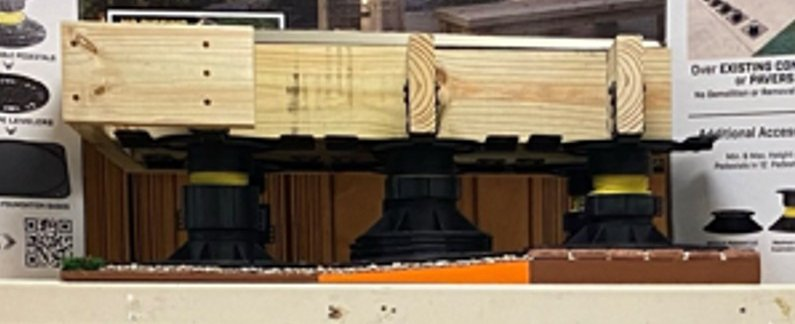
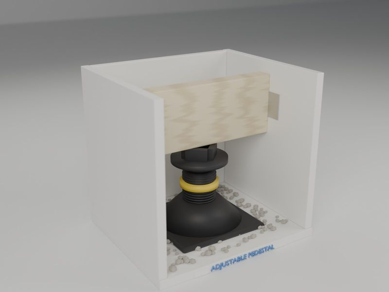
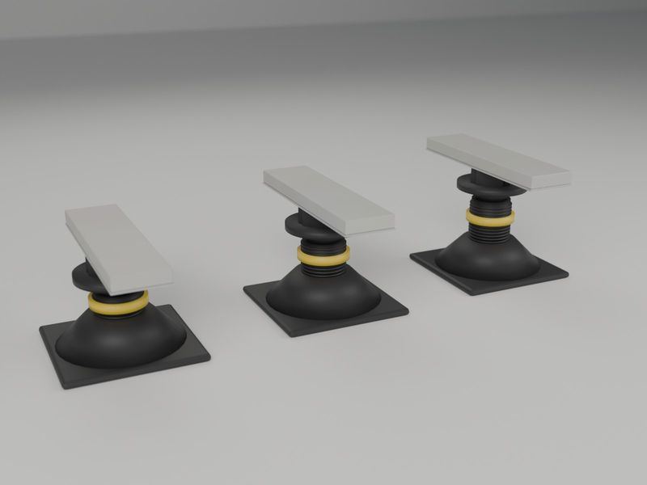

Bison sample deck displays for Home Depot
In-store sample decks that show shoppers how Bison Level.Up adjustable deck pedestals work: real framing, real decking, real ground conditions, built to survive shipping and the store aisle.
Bison Level.Up is an adjustable pedestal system for building a ground-level deck without digging footings. The pedestals sit right on grade, adjust for height and compensate for slope. DAP distributes the system, and it’s sold at Home Depot. DAP needed a way to show shoppers, in the aisle, how a deck goes together on pedestals instead of posts.
We built a 40" x 30" sample deck on a Baltic birch base finished like a real backyard: pea gravel, brick pavers and an artificial-grass border, with an 8% up-slope across the middle third so the pedestals visibly adjust to uneven ground. The frame is pressure-treated 2x6 joists built to Bison’s instructions with Simpson angle brackets, topped with gray composite deck boards. Every pedestal is screwed in from underneath so the display holds together through shipping and handling, and each one ships in its own stackable wooden crate.
The program grew from there. We built smaller three-sided PVC displays with a single pedestal: some with a fixed joist, others with a movable joist so shoppers can try the adjustment themselves. We also built a deluxe deck on six pedestals over grass and gravel. For the paver side of the line, we made 100 paver pedestal demos: a pedestal with its paver attachment carrying a 2 cm porcelain paver, with a galvanized backer glued underneath, cut to 3" wide and ground smooth.
It’s a good example of what we do for brands: take a product that’s hard to explain on a shelf, and build a piece that shows it working with real materials, in quantity, and ready to ship to stores.
| Client | DAP Products Inc. (distributor of Bison Level.Up) |
|---|---|
| Where | Home Depot stores |
| Sample deck | 40" x 30" on Baltic birch; gravel, brick pavers and turf; 8% slope; PT 2x6 joists, composite decking; crated |
| Pedestal displays | Three-sided PVC displays with fixed or movable joists, plus a six-pedestal deluxe deck |
| Paver demos | 100 porcelain paver pedestal demos |
| Timeline | Prototyped Dec 2023; displays shipped 2024; paver demos early 2025 |
Photos show the actual sample deck. The two images marked “Illustration” are renderings of other pieces from this project.

The sample deck in our shop before crating

Sample deck on the shelf in a Home Depot store

Illustration: three-sided PVC pedestal display with a movable joist

Illustration: porcelain paver pedestal demos